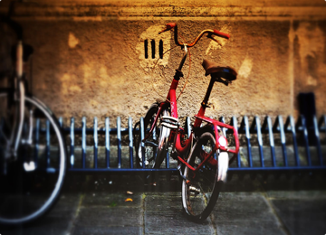
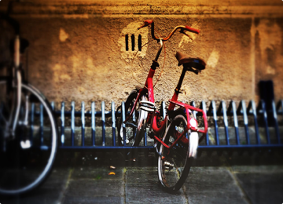
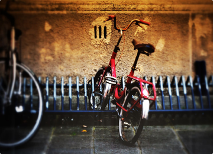

Designers everywhere gush with admiration upon seeing a web design and exclaim "its beautiful, it's so clean!". There are a countless number of webdesign round-ups dedicated to 'clean' design and it is a term thrown around quite a bit in the web design community. It can be easy to spot a good example of clean design.
STRICT has been designed to be fully responsive on all devices
